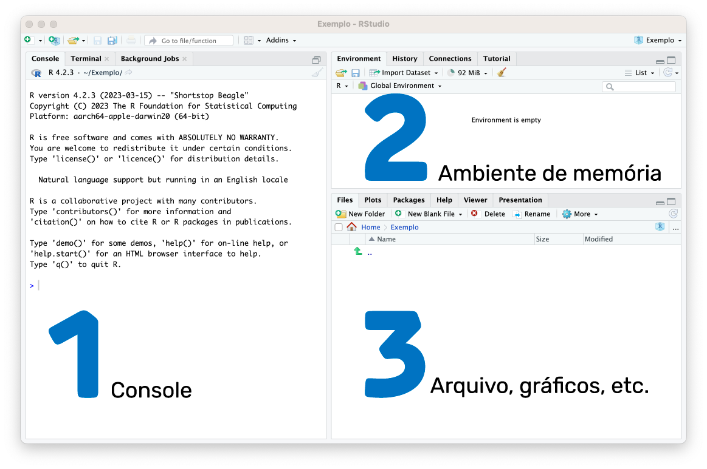
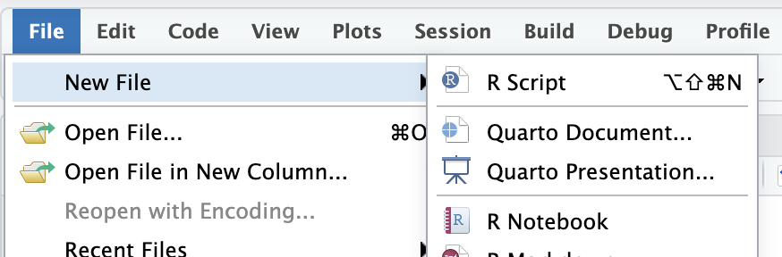
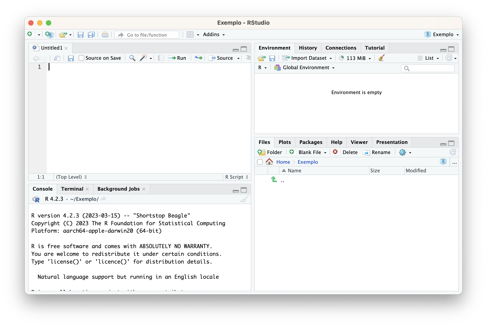

Capítulo 6 Trabalhando no RStudio
Seja na versão instalada no seu computador (plano A) ou na nuvem (plano B), conheça melhor as áreas do RStudio:
Console: local onde serão apresentadas as respostas para códigos execudados;
Ambiente de memória (Environment): é o cerébro do R, onde ficam registrados os objetos que ele reconhece.
A área de Arquivos (Files), Gráficos (Plots), Pacotes (Packages), Ajuda (Help), Visualização (Viewer) e Apresentação (Presentation): mostram respectivamente, os arquivos do diretório onde estão seus arquivos no computador, os gráficos, os pacotes, ajuda, janela de visualização e apresentação.
A figura abaixo identifica cada uma dessas áreas:

Figura: Identificação das áreas do RStudio
Digitaremos os códigos da linguagem R, em um arquivo que chamamos de script, para abrir um arquivo do tipo script R, faça:
Acesse a opção File no menu principal do RStudio;
Escolha a opção New File
E depois a opção R Script

Figura: Como abrir um novo arquivo de script R
Assim, na tela da IDE RStudio aparecerá uma nova área, que é a área do arquivo script, como mostra a figura.

Figura: Como abrir um novo arquivo de script R
Observe que o arquivo está sem um nome Untitled1 (sem titulo), salve o arquivo atribuindo-o um nome adequado. Para isso, no menu principal, escolha File, Save.